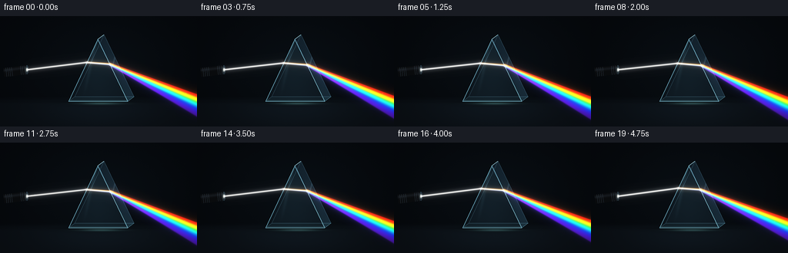
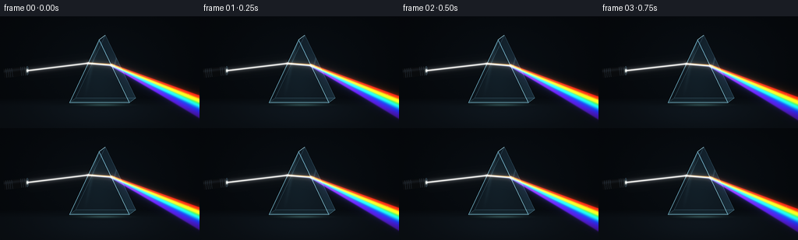

CODING AGENTS AS PIXEL WORLD MODELS
traex/GPT-6.1-Sol · phygen_086
点击播放 · 原生 RGB 像素
逐轮保存的候选
回放视频、检查图与代码变化。
每份候选均可单独播放。实际图片检查记录在下方工具轨迹中。
候选 01播放与检查图
点击播放 · 原生 RGB 像素


展开代码变化
--- 上一保存版本
+++ 本次保存版本
@@ -0,0 +1,179 @@
+"""Analytical prism optics and supersampled procedural RGB rendering."""
+from pathlib import Path
+import json, math
+import numpy as np
+from PIL import Image, ImageDraw, ImageFilter
+import artifact_io
+
+ROOT=Path(__file__).resolve().parent
+SPEC=json.loads((ROOT/'task_spec.json').read_text())
+W,H=SPEC['width'],SPEC['height']
+S=3
+WW,HH=W*S,H*S
+Y,X=np.mgrid[0:HH,0:WW].astype(np.float32)
+X=(X+.5)/S; Y=(Y+.5)/S
+A=np.array([127.,30.]); B=np.array([89.,111.]); C=np.array([166.,111.])
+OFFSET=np.array([8.,-6.])
+
+def mask(poly):
+ p=Image.new('L',(WW,HH));d=ImageDraw.Draw(p)
+ d.polygon([tuple(v*S) for v in poly],fill=255)
+ return np.array(p,dtype=np.float32)/255
+
+def lines(paths,colors,widths):
+ im=Image.new('RGB',(WW,HH)); d=ImageDraw.Draw(im)
+ for path,col,w in zip(paths,colors,widths):
+ d.line([tuple(np.array(p)*S) for p in path],fill=col,width=max(1,int(w*S)),joint='curve')
+ return np.asarray(im,dtype=np.float32)/255
+
+def blur(rgb,r):
+ im=Image.fromarray(np.uint8(np.clip(rgb,0,1)*255))
+ return np.asarray(im.filter(ImageFilter.GaussianBlur(r*S)),dtype=np.float32)/255
+
+def segment(p,q,width):
+ p=np.asarray(p);q=np.asarray(q);v=q-p; length=np.linalg.norm(v);v=v/length
+ along=(X-p[0])*v[0]+(Y-p[1])*v[1]
+ across=(X-p[0])*v[1]-(Y-p[1])*v[0]
+ edge=np.clip(along*2+1,0,1)*np.clip((length-along)*2+1,0,1)
+ return np.exp(-.5*(across/width)**2)*edge
+
+def ray_edge(p,d,a,b):
+ # p+t*d=a+s*(b-a)
+ t,s=np.linalg.solve(np.stack([d,a-b],axis=1),a-p)
+ return p+t*d
+
+def refract(d,n,eta):
+ # n points towards the incident medium.
+ ci=-np.dot(n,d)
+ return eta*d+(eta*ci-np.sqrt(1-eta*eta*(1-ci*ci)))*n
+
+def spectral_color(lam):
+ # Smooth visible-spectrum rendering, in nanometres.
+ knots=np.array([400,425,450,475,495,520,550,580,610,650,700],float)
+ colors=np.array([[.43,.04,1],[.27,.04,1],[.03,.12,1],[0,.60,1],[0,1,.83],[.04,1,.13],[.55,1,0],[1,.87,0],[1,.32,.01],[1,.03,.01],[1,.015,.012]])
+ return np.array([np.interp(lam,knots,colors[:,i]) for i in range(3)],np.float32)
+
+# Matte dark studio, softly illuminated slate bench, no text or overlays.
+rng=np.random.default_rng(48)
+noise=rng.normal(0,.0009,(HH,WW)).astype(np.float32)
+bg=np.zeros((HH,WW,3),np.float32)
+background=np.exp(-((X-133)/106)**2-((Y-65)/75)**2)
+bg[:]=np.array([.012,.019,.029])+background[:,:,None]*np.array([.012,.022,.029])
+bench=np.clip((Y-105)/10,0,1)
+pool=np.exp(-((X-128)/79)**2-((Y-122)/25)**2)
+bg+=bench[:,:,None]*(np.array([.013,.018,.022])+pool[:,:,None]*np.array([.012,.021,.028]))
+bg+=noise[:,:,None]
+# Grounding contact shadow and a distant horizon, kept extremely subtle.
+shadow=np.exp(-((X-128)/39)**2-((Y-113)/3.3)**2)
+bg*=1-.66*shadow[:,:,None]
+bg+=np.exp(-((Y-110)/.5)**2)[:,:,None]*np.array([.002,.004,.005])
+
+front=mask([A,B,C]); side=mask([A,A+OFFSET,C+OFFSET,C]); rear=mask([A+OFFSET,B+OFFSET,C+OFFSET])
+base=mask([B,B+OFFSET,C+OFFSET,C])
+glass=bg.copy()
+glass+=rear[:,:,None]*np.array([.009,.016,.019])
+sidegrad=np.clip((X-128)/45,0,1)
+glass+=side[:,:,None]*(np.array([.026,.052,.072])+sidegrad[:,:,None]*np.array([.023,.045,.053]))
+fresnel=np.exp(-((X-127)/27)**2)*(.34+.66*np.clip((111-Y)/81,0,1))
+glass+=front[:,:,None]*(np.array([.013,.025,.033])+fresnel[:,:,None]*np.array([.019,.036,.043]))
+glass+=base[:,:,None]*np.array([.018,.035,.038])
+# Soft reflection of the glass and small caustic under the prism.
+caustic=np.exp(-((X-131)/26)**2-((Y-114.0)/1.6)**2)
+glass+=caustic[:,:,None]*np.array([.13,.23,.23])
+# Reflected light strips on the front face, tapering over the polished glass.
+strip=np.exp(-.5*((X-(122-(Y-45)*.22))/1.45)**2)*front*np.clip((105-Y)/70,0,1)
+glass+=strip[:,:,None]*np.array([.05,.083,.094])
+strip2=np.exp(-.5*((X-(152-(Y-45)*.29))/.65)**2)*side
+glass+=strip2[:,:,None]*np.array([.075,.10,.115])
+
+edgepaths=[[A+OFFSET,B+OFFSET,C+OFFSET,A+OFFSET],[A,A+OFFSET],[C,C+OFFSET],[B,B+OFFSET],[A,B,C,A]]
+edges=lines(edgepaths,[(46,74,86),(139,181,192),(91,143,151),(45,80,88),(102,157,172)], [.45,.7,.65,.5,.7])
+edges+=lines([[A+np.array([0,2]),B+np.array([1,-1])],[A+np.array([1,1]),C+np.array([-1,-1])],[B+np.array([2,-1]),C+np.array([-1,-1])]],[(32,62,72),(48,77,90),(73,119,126)],[.35,.35,.45])
+
+# Source barrel: a modest black optical collimator on the left.
+def source(theta):
+ d=np.array([math.cos(theta),math.sin(theta)]); n=np.array([-d[1],d[0]])
+ tip=np.array([35.,70.]); tail=tip-d*30
+ body=mask([tail+n*6,tip+n*6,tip-n*6,tail-n*6])
+ along=(X-tail[0])*d[0]+(Y-tail[1])*d[1]
+ across=(X-tip[0])*n[0]+(Y-tip[1])*n[1]
+ src=np.zeros_like(bg)
+ shade=.04+.055*np.exp(-.5*((across+2.8)/1.25)**2)
+ src+=body[:,:,None]*shade[:,:,None]*np.array([.70,.84,1.])
+ ridgepaths=[]
+ for v in [3,5.5,8,10.5,22,24.5,27]:
+ q=tail+d*v;ridgepaths.append([q+n*5.7,q-n*5.7])
+ src+=lines(ridgepaths,[(36,47,58)]*len(ridgepaths),[.45]*len(ridgepaths))
+ # Oblique front aperture, cool lens rim and white illuminated pupil.
+ rr=((X-tip[0])/1.7)**2+((Y-tip[1])/5.4)**2
+ aperture=np.clip(1.5-rr,0,1)
+ src=src*(1-aperture[:,:,None])+aperture[:,:,None]*np.array([.04,.075,.1])
+ ring=np.exp(-((rr-1)/.17)**2)
+ src+=ring[:,:,None]*np.array([.12,.18,.22])
+ pupil=np.exp(-.5*((X-tip[0])/.85)**2-.5*((Y-tip[1])/1.6)**2)
+ src+=pupil[:,:,None]*np.array([1.0,.99,.91])
+ return src,body,tip,d
+
+# A handful of dust specks barely visible only in scattered illumination.
+dust=np.column_stack([rng.uniform(40,252,36),rng.uniform(37,134,36),rng.uniform(.035,.12,36),rng.uniform(-1.8,1.8,36)])
+frames=[]
+for k in range(SPEC['frames']):
+ t=k/SPEC['fps']
+ # A very small smooth scan demonstrates correlated refraction, not bending a free ray.
+ theta=math.radians(-7.0+.85*math.sin(t*math.pi/3.6))
+ src,body,tip,d=source(theta)
+ entry=ray_edge(tip,d,A,B)
+ in_normal=np.array([-81.,-38.]);in_normal/=np.linalg.norm(in_normal)
+ out_normal=np.array([81.,-39.]);out_normal/=np.linalg.norm(out_normal)
+ intensity=.94+.035*math.sin(t*1.6)
+ internal=np.zeros_like(bg)
+ outgoing=np.zeros_like(bg)
+ density=np.zeros((HH,WW),np.float32)
+ for lam in np.linspace(400,700,67):
+ index=1.38+.035/(lam/1000.)**2
+ inside=refract(d,in_normal,1/index)
+ exit=ray_edge(entry,inside,A,C)
+ outside=refract(inside,-out_normal,index)
+ color=spectral_color(lam)
+ internal+=segment(entry,exit,.72)[:,:,None]*color*.036
+ q=exit+outside*180
+ band=segment(exit,q,.65)
+ # Retain spectral purity while allowing the fan to spread naturally.
+ outgoing+=band[:,:,None]*color
+ density+=band
+ outgoing=outgoing/(density[:,:,None]+1e-6)*np.minimum(density[:,:,None]*.29,1.65)
+ # Scattering fades with path length, but the unbroken rainbow rays remain straight.
+ outgoing*=np.exp(-np.maximum(X-148,0)/370)[:,:,None]*intensity
+ incoming=segment(tip,entry,.67)[:,:,None]*np.array([1.03,1.01,.96])*intensity
+ white_glow=segment(tip,entry,2.6)[:,:,None]*np.array([.037,.041,.050])*intensity
+ light=incoming+internal+outgoing
+ image=glass.copy()
+ image=image*(1-body[:,:,None])+src
+ image+=light+white_glow+blur(light*.40,2.3)+blur(light*.18,6.5)
+ image+=edges
+ # Tight bright entry/exit scattering is physically colocated with the interfaces.
+ red_index=1.38+.035/.55**2
+ v=refract(d,in_normal,1/red_index); e=ray_edge(entry,v,A,C)
+ for p,amp in [(entry,.22),(e,.17)]:
+ g=np.exp(-.5*((X-p[0])/1.3)**2-.5*((Y-p[1])/1.3)**2)
+ image+=g[:,:,None]*np.array([amp,amp,amp*.97])
+ # Faint colored caustic on the tabletop at the tail of the spectrum.
+ reflection=blur(outgoing*.075,3)
+ reflection*=np.exp(-.5*((Y-119)/6)**2)[:,:,None]
+ image+=reflection
+ for xx,yy,size,velocity in dust:
+ xx+=velocity*t*.7; yy+=t*.4
+ # Specks become visible only when a ray actually illuminates them.
+ ix=int(np.clip(xx*S,0,WW-1));iy=int(np.clip(yy*S,0,HH-1))
+ illumination=min(1,float(light[iy,ix].sum()))
+ if illumination>.03:
+ spot=np.exp(-.5*((X-xx)/.24)**2-.5*((Y-yy)/.24)**2)
+ image+=spot[:,:,None]*np.array([.24,.25,.26])*illumination
+ # Soft highlight shoulder; preserve rich blacks and saturated spectral colors.
+ image=np.maximum(image,0)
+ image=np.where(image<.8,image,.8+.2*(1-np.exp(-(image-.8)/.2)))
+ rgb=np.uint8(np.clip(image,0,1)**.93*255+.5)
+ frame=Image.fromarray(rgb).resize((W,H),Image.Resampling.LANCZOS)
+ frames.append(np.asarray(frame))
+artifact_io.save(np.stack(frames),ROOT)
+print(f'Saved {len(frames)} RGB frames at {W}x{H}.')
可观测工具轨迹
实际执行的命令与返回图片。
命令 1exit 0
/bin/bash -lc 'ls -la && cat prompt.txt && cat GENERATION_RULES.md && cat task_spec.json'
命令 2exit 0
/bin/bash -lc 'cat artifact_io.py && cat player_template.html'
命令 3exit 0
/bin/bash -lc "python - <<'PY'
import numpy as np, math
A=np.array([127.,30.]); B=np.array([89.,111.]); C=np.array([166.,111.]); p=np.array([35.,70.]);d=np.array([math.cos(math.radians(-7)),math.sin(math.radians(-7))])
def hit(p,d,a,b):
t,s=np.linalg.solve(np.stack([d,a-b],axis=1),a-p);return p+t*d,t,s
def refract(d,n,e):
ci=-np.dot(n,d);return e*d+(e*ci-np.sqrt(1-e*e*(1-ci*ci)))*n
p,_,s=hit(p,d,A,B); print('entry',p,'fraction',s)
n=np.array([-81.,-38.]);n/=np.linalg.norm(n);m=np.array([81.,-39.]);m/=np.linalg.norm(m)
for lam in [.4,.55,.7]:
index=1.38+.035/lam**2;v=refract(d,n,1/index);q,_,s=hit(p,v,A,C);o=refract(v,-m,index); print(lam,q,s, 'angle',math.degrees(math.atan2(o[1],o[0])), 'right y',q[1]+(256-q[0])*o[1]/o[0])
PY"命令 4exit 0
/bin/bash -lc 'command -v ffmpeg || true; ls -lh pixels.npz index.html 2>/dev/null || true'
命令 5exit 0
/bin/bash -lc "cat > generate.py <<'PY'
\"\"\"Analytical prism optics and supersampled procedural RGB rendering.\"\"\"
from pathlib import Path
import json, math
import numpy as np
from PIL import Image, ImageDraw, ImageFilter
import artifact_io
ROOT=Path(__file__).resolve().parent
SPEC=json.loads((ROOT/'task_spec.json').read_text())
W,H=SPEC['width'],SPEC['height']
S=3
WW,HH=W*S,H*S
Y,X=np.mgrid[0:HH,0:WW].astype(np.float32)
X=(X+.5)/S; Y=(Y+.5)/S
A=np.array([127.,30.]); B=np.array([89.,111.]); C=np.array([166.,111.])
OFFSET=np.array([8.,-6.])
def mask(poly):
p=Image.new('L',(WW,HH));d=ImageDraw.Draw(p)
d.polygon([tuple(v*S) for v in poly],fill=255)
return np.array(p,dtype=np.float32)/255
def lines(paths,colors,widths):
im=Image.new('RGB',(WW,HH)); d=ImageDraw.Draw(im)
for path,col,w in zip(paths,colors,widths):
d.line([tuple(np.array(p)*S) for p in path],fill=col,width=max(1,int(w*S)),joint='curve')
return np.asarray(im,dtype=np.float32)/255
def blur(rgb,r):
im=Image.fromarray(np.uint8(np.clip(rgb,0,1)*255))
return np.asarray(im.filter(ImageFilter.GaussianBlur(r*S)),dtype=np.float32)/255
def segment(p,q,width):
p=np.asarray(p);q=np.asarray(q);v=q-p; length=np.linalg.norm(v);v=v/length
along=(X-p[0])*v[0]+(Y-p[1])*v[1]
across=(X-p[0])*v[1]-(Y-p[1])*v[0]
edge=np.clip(along*2+1,0,1)*np.clip((length-along)*2+1,0,1)
return np.exp(-.5*(across/width)**2)*edge
def ray_edge(p,d,a,b):
# p+t*d=a+s*(b-a)
t,s=np.linalg.solve(np.stack([d,a-b],axis=1),a-p)
return p+t*d
def refract(d,n,eta):
# n points towards the incident medium.
ci=-np.dot(n,d)
return eta*d+(eta*ci-np.sqrt(1-eta*eta*(1-ci*ci)))*n
def spectral_color(lam):
# Smooth visible-spectrum rendering, in nanometres.
knots=np.array([400,425,450,475,495,520,550,580,610,650,700],float)
colors=np.array([[.43,.04,1],[.27,.04,1],[.03,.12,1],[0,.60,1],[0,1,.83],[.04,1,.13],[.55,1,0],[1,.87,0],[1,.32,.01],[1,.03,.01],[1,.015,.012]])
return np.array([np.interp(lam,knots,colors[:,i]) for i in range(3)],np.float32)
# Matte dark studio, softly illuminated slate bench, no text or overlays.
rng=np.random.default_rng(48)
noise=rng.normal(0,.0009,(HH,WW)).astype(np.float32)
bg=np.zeros((HH,WW,3),np.float32)
background=np.exp(-((X-133)/106)**2-((Y-65)/75)**2)
bg[:]=np.array([.012,.019,.029])+background[:,:,None]*np.array([.012,.022,.029])
bench=np.clip((Y-105)/10,0,1)
pool=np.exp(-((X-128)/79)**2-((Y-122)/25)**2)
bg+=bench[:,:,None]*(np.array([.013,.018,.022])+pool[:,:,None]*np.array([.012,.021,.028]))
bg+=noise[:,:,None]
# Grounding contact shadow and a distant horizon, kept extremely subtle.
shadow=np.exp(-((X-128)/39)**2-((Y-113)/3.3)**2)
bg*=1-.66*shadow[:,:,None]
bg+=np.exp(-((Y-110)/.5)**2)[:,:,None]*np.array([.002,.004,.005])
front=mask([A,B,C]); side=mask([A,A+OFFSET,C+OFFSET,C]); rear=mask([A+OFFSET,B+OFFSET,C+OFFSET])
base=mask([B,B+OFFSET,C+OFFSET,C])
glass=bg.copy()
glass+=rear[:,:,None]*np.array([.009,.016,.019])
sidegrad=np.clip((X-128)/45,0,1)
glass+=side[:,:,None]*(np.array([.026,.052,.072])+sidegrad[:,:,None]*np.array([.023,.045,.053]))
fresnel=np.exp(-((X-127)/27)**2)*(.34+.66*np.clip((111-Y)/81,0,1))
glass+=front[:,:,None]*(np.array([.013,.025,.033])+fresnel[:,:,None]*np.array([.019,.036,.043]))
glass+=base[:,:,None]*np.array([.018,.035,.038])
# Soft reflection of the glass and small caustic under the prism.
caustic=np.exp(-((X-131)/26)**2-((Y-114.0)/1.6)**2)
glass+=caustic[:,:,None]*np.array([.13,.23,.23])
# Reflected light strips on the front face, tapering over the polished glass.
strip=np.exp(-.5*((X-(122-(Y-45)*.22))/1.45)**2)*front*np.clip((105-Y)/70,0,1)
glass+=strip[:,:,None]*np.array([.05,.083,.094])
strip2=np.exp(-.5*((X-(152-(Y-45)*.29))/.65)**2)*side
glass+=strip2[:,:,None]*np.array([.075,.10,.115])
edgepaths=[[A+OFFSET,B+OFFSET,C+OFFSET,A+OFFSET],[A,A+OFFSET],[C,C+OFFSET],[B,B+OFFSET],[A,B,C,A]]
edges=lines(edgepaths,[(46,74,86),(139,181,192),(91,143,151),(45,80,88),(102,157,172)], [.45,.7,.65,.5,.7])
edges+=lines([[A+np.array([0,2]),B+np.array([1,-1])],[A+np.array([1,1]),C+np.array([-1,-1])],[B+np.array([2,-1]),C+np.array([-1,-1])]],[(32,62,72),(48,77,90),(73,119,126)],[.35,.35,.45])
# Source barrel: a modest black optical collimator on the left.
def source(theta):
d=np.array([math.cos(theta),math.sin(theta)]); n=np.array([-d[1],d[0]])
tip=np.array([35.,70.]); tail=tip-d*30
body=mask([tail+n*6,tip+n*6,tip-n*6,tail-n*6])
along=(X-tail[0])*d[0]+(Y-tail[1])*d[1]
across=(X-tip[0])*n[0]+(Y-tip[1])*n[1]
src=np.zeros_like(bg)
shade=.04+.055*np.exp(-.5*((across+2.8)/1.25)**2)
src+=body[:,:,None]*shade[:,:,None]*np.array([.70,.84,1.])
ridgepaths=[]
for v in [3,5.5,8,10.5,22,24.5,27]:
q=tail+d*v;ridgepaths.append([q+n*5.7,q-n*5.7])
src+=lines(ridgepaths,[(36,47,58)]*len(ridgepaths),[.45]*len(ridgepaths))
# Oblique front aperture, cool lens rim and white illuminated pupil.
rr=((X-tip[0])/1.7)**2+((Y-tip[1])/5.4)**2
aperture=np.clip(1.5-rr,0,1)
src=src*(1-aperture[:,:,None])+aperture[:,:,None]*np.array([.04,.075,.1])
ring=np.exp(-((rr-1)/.17)**2)
src+=ring[:,:,None]*np.array([.12,.18,.22])
pupil=np.exp(-.5*((X-tip[0])/.85)**2-.5*((Y-tip[1])/1.6)**2)
src+=pupil[:,:,None]*np.array([1.0,.99,.91])
return src,body,tip,d
# A handful of dust specks barely visible only in scattered illumination.
dust=np.column_stack([rng.uniform(40,252,36),rng.uniform(37,134,36),rng.uniform(.035,.12,36),rng.uniform(-1.8,1.8,36)])
frames=[]
for k in range(SPEC['frames']):
t=k/SPEC['fps']
# A very small smooth scan demonstrates correlated refraction, not bending a free ray.
theta=math.radians(-7.0+.85*math.sin(t*math.pi/3.6))
src,body,tip,d=source(theta)
entry=ray_edge(tip,d,A,B)
in_normal=np.array([-81.,-38.]);in_normal/=np.linalg.norm(in_normal)
out_normal=np.array([81.,-39.]);out_normal/=np.linalg.norm(out_normal)
intensity=.94+.035*math.sin(t*1.6)
internal=np.zeros_like(bg)
outgoing=np.zeros_like(bg)
density=np.zeros((HH,WW),np.float32)
for lam in np.linspace(400,700,67):
index=1.38+.035/(lam/1000.)**2
inside=refract(d,in_normal,1/index)
exit=ray_edge(entry,inside,A,C)
outside=refract(inside,-out_normal,index)
color=spectral_color(lam)
internal+=segment(entry,exit,.72)[:,:,None]*color*.036
q=exit+outside*180
band=segment(exit,q,.65)
# Retain spectral purity while allowing the fan to spread naturally.
outgoing+=band[:,:,None]*color
density+=band
outgoing=outgoing/(density[:,:,None]+1e-6)*np.minimum(density[:,:,None]*.29,1.65)
# Scattering fades with path length, but the unbroken rainbow rays remain straight.
outgoing*=np.exp(-np.maximum(X-148,0)/370)[:,:,None]*intensity
incoming=segment(tip,entry,.67)[:,:,None]*np.array([1.03,1.01,.96])*intensity
white_glow=segment(tip,entry,2.6)[:,:,None]*np.array([.037,.041,.050])*intensity
light=incoming+internal+outgoing
image=glass.copy()
image=image*(1-body[:,:,None])+src
image+=light+white_glow+blur(light*.40,2.3)+blur(light*.18,6.5)
image+=edges
# Tight bright entry/exit scattering is physically colocated with the interfaces.
red_index=1.38+.035/.55**2
v=refract(d,in_normal,1/red_index); e=ray_edge(entry,v,A,C)
for p,amp in [(entry,.22),(e,.17)]:
g=np.exp(-.5*((X-p[0])/1.3)**2-.5*((Y-p[1])/1.3)**2)
image+=g[:,:,None]*np.array([amp,amp,amp*.97])
# Faint colored caustic on the tabletop at the tail of the spectrum.
reflection=blur(outgoing*.075,3)
reflection*=np.exp(-.5*((Y-119)/6)**2)[:,:,None]
image+=reflection
for xx,yy,size,velocity in dust:
xx+=velocity*t*.7; yy+=t*.4
# Specks become visible only when a ray actually illuminates them.
ix=int(np.clip(xx*S,0,WW-1));iy=int(np.clip(yy*S,0,HH-1))
illumination=min(1,float(light[iy,ix].sum()))
if illumination>.03:
spot=np.exp(-.5*((X-xx)/.24)**2-.5*((Y-yy)/.24)**2)
image+=spot[:,:,None]*np.array([.24,.25,.26])*illumination
# Soft highlight shoulder; preserve rich blacks and saturated spectral colors.
image=np.maximum(image,0)
image=np.where(image<.8,image,.8+.2*(1-np.exp(-(image-.8)/.2)))
rgb=np.uint8(np.clip(image,0,1)**.93*255+.5)
frame=Image.fromarray(rgb).resize((W,H),Image.Resampling.LANCZOS)
frames.append(np.asarray(frame))
artifact_io.save(np.stack(frames),ROOT)
print(f'Saved {len(frames)} RGB frames at {W}x{H}.')
PY
python generate.py"命令 6exit 0
/bin/bash -lc "python - <<'PY'
from pathlib import Path
import numpy as np
from PIL import Image
p=Path('.')
files=sorted((p/'frames').glob('*.png'))
a=np.stack([np.asarray(Image.open(f)) for f in files])
assert a.shape==(20,144,256,3) and a.dtype==np.uint8
packed=np.load('pixels.npz')['pixels']; assert packed.shape==(144,256,20)
assert (p/'index.html').is_file() and (p/'inspection.png').is_file() and (p/'transition_check.png').is_file()
print('Validated RGB frames:',a.shape)
print('Mean temporal pixel change:',round(float(np.abs(np.diff(a.astype(float),axis=0)).mean()),3))
print('Artifacts:', ', '.join(x.name for x in [p/'pixels.npz',p/'index.html',p/'inspection.png',p/'transition_check.png']))
print('Spectrum at right edge:',[(y,a[10,y,245].tolist()) for y in range(98,134,4)])
PY"保存候选 1 份；完成命令 6 次；可验证图片返回 0 张。原始 API 响应与完整日志保留在本地。